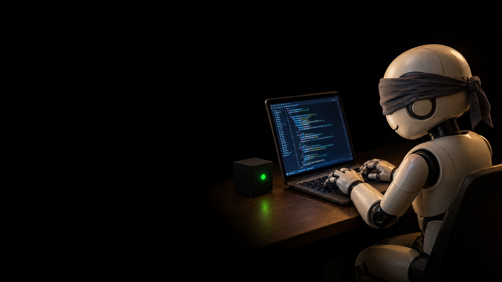
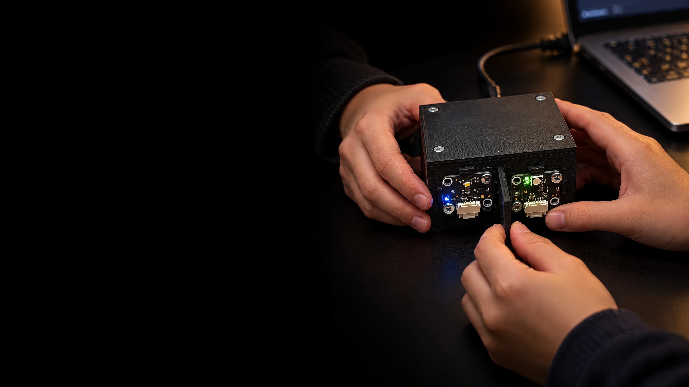
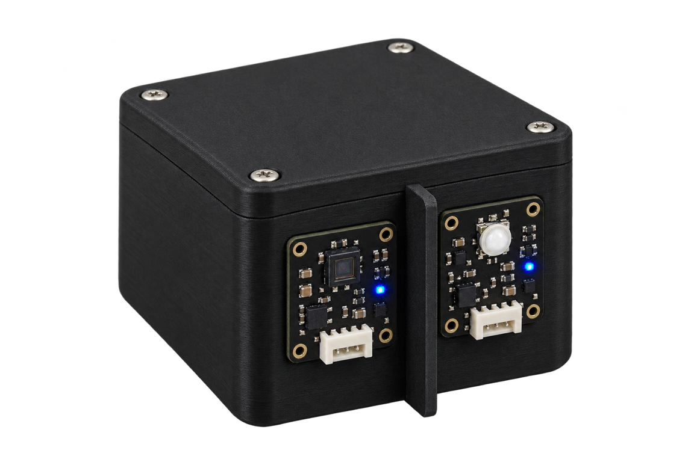
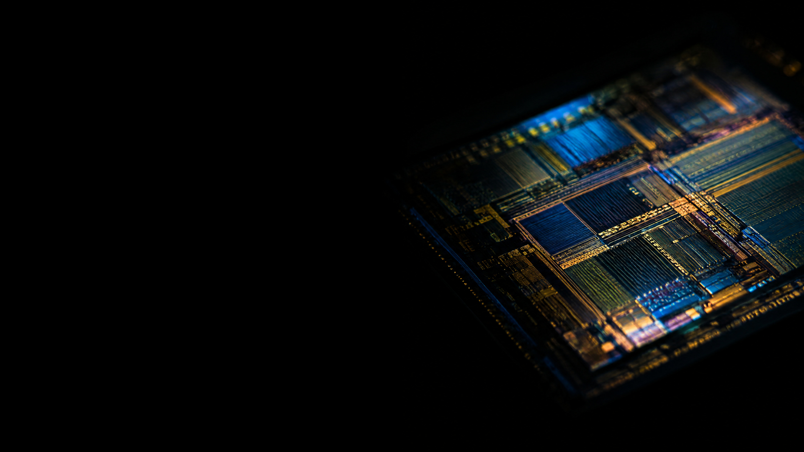

AI answers any question in seconds.
it writes, summarises, translates and explains. it seems to know everything.
or does it?
so why learn anything at all?




| 15:00 | look back: where are you stuck? |
| 15:30 | input: one concept |
| 16:00 | experiment, all together |
| 16:30 | break |
| 16:45 | workshop |
| 18:00 | outlook and your task for the week |